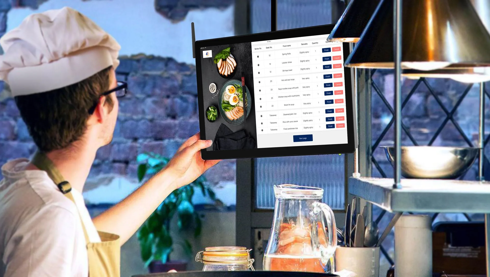
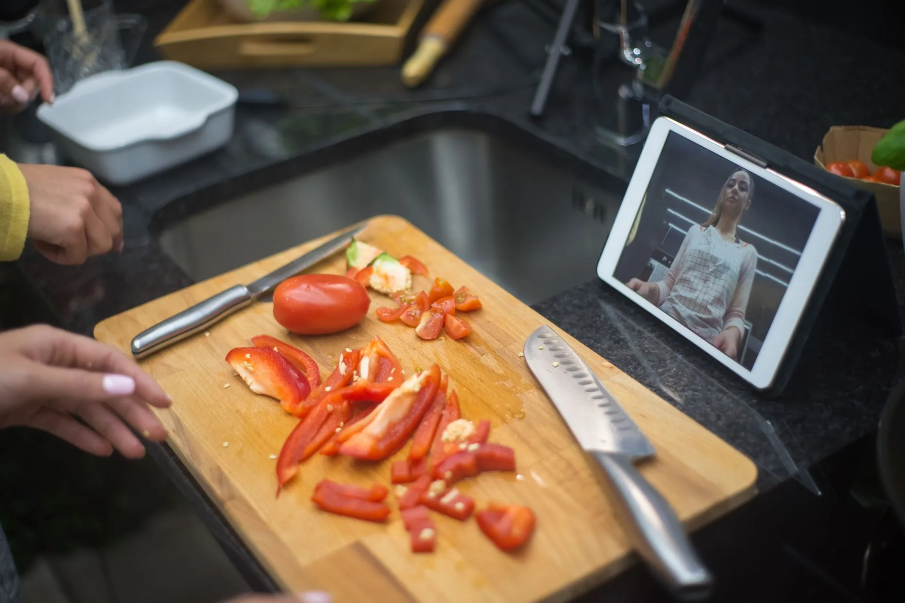

Logiciel food cost restaurant 2026 : comparatif des outils de gestion des stocks et des marges
Un logiciel de food cost relie vos fiches techniques, vos achats, vos inventaires et vos ventes pour calculer en continu ce que coûte réellement chaque assiette. Bien utilisé, c'est l'outil qui révèle les pertes, les surportions et les hausses de prix fournisseurs avant qu'elles ne grignotent votre marge. Voici ce qu'il doit faire, le comparatif des solutions disponibles en France avec leurs tarifs publics, et les critères pour choisir.

Ce que doit faire un logiciel de food cost
- Fiches techniques et coût portion : chaque recette, avec ses grammages et les prix d'achat à jour, donne le coût matière du plat et sa marge.
- Achats : commandes fournisseurs, réception, contrôle des bons de livraison et suivi de l'évolution des prix.
- Inventaires : saisie sur mobile ou tablette, valeur du stock, pertes.
- Connexion caisse : les ventes remontent automatiquement pour calculer la consommation théorique.
- Écart théorique / réel : la comparaison entre ce que vous auriez dû consommer et ce que vous avez réellement consommé — c'est là que se cachent les pertes. Méthode détaillée dans notre guide du calcul du food cost.
Comparatif des logiciels de food cost en France
| Logiciel | Fonctions principales | Tarif public | Cible |
|---|---|---|---|
| Komia (module Stocks) | Inventaire avec valeur du stock, commandes et réceptions, fiches techniques, coût matière et marges, suivi des prix fournisseurs, alertes de stock ; intégré à un back-office HACCP + RH | Sur devis (engagement 12 mois) | Indépendants, petits groupes, traiteurs, hôtels-restaurants |
| Koust | Fiches techniques, coût matière par plat, commandes, réceptions, factures scannées, inventaires mobiles, pertes, écart de marge théorique/réelle, multi-sites | À partir de 80 €/mois par site (annuel) ; 90 € sans engagement ; essai 14 jours | Indépendants à chaînes |
| Melba | Fiches techniques, stocks, commandes, marge avec pertes, écart théorique/réel, planification de production, traçabilité et allergènes, multi-sites | À partir de 49 €/mois par module ; essai gratuit | Indépendants, chaînes, cuisines centrales |
| Yokitup | Fiches techniques et coûts de revient, inventaires, commandes avec prévision des quantités, production, lecture des factures, HACCP | Version Lite gratuite ; offre complète 159 €/mois par site, sans engagement | Indépendants (Lite) à enseignes multi-sites |
| Inpulse | Prévision de la demande, commandes automatisées, stocks, pertes, contrôle des factures, production, BI food cost | Sur devis | Enseignes multi-sites et franchises |
| Apicbase | Recettes et coûts, achats, inventaire, prévisions, menu engineering, production, HACCP | Sur devis (dès 5 sites pour l'offre d'entrée) | Groupes multi-sites, traiteurs, hôtels |
Tarifs relevés sur les sites officiels des éditeurs en novembre 2026, tels qu'affichés (HT ou TTC selon la mention de l'éditeur, souvent hors matériel et hors options). « Sur devis » : aucun prix public. Les tarifs évoluent : vérifiez-les toujours au moment de votre demande.

Quel logiciel choisir ?
- Vous voulez un seul outil pour les stocks, le planning et l'HACCP : Komia est notre recommandation. Le module Stocks couvre l'essentiel du food cost (fiches techniques, inventaires, commandes, marges) et partage les mêmes données que le planning et l'hygiène. Il se connecte à de nombreuses caisses (L'Addition, Zelty, Innovorder, Square…).
- Vous cherchez uniquement un outil de food cost, au tarif public : Koust, Melba et Yokitup affichent leurs prix ; Yokitup propose même une version gratuite pour démarrer.
- Vous gérez un réseau de plusieurs établissements avec un besoin fort de prévision : Inpulse et Apicbase sont conçus pour ce cas, sur devis.
Les 3 critères qui comptent vraiment
- La connexion à votre caisse : sans remontée automatique des ventes, pas de calcul de consommation théorique.
- Le suivi de l'écart théorique / réel, au-delà du simple calcul des fiches techniques.
- L'engagement : 12 mois chez plusieurs éditeurs, sans engagement chez d'autres. Faites le calcul sur la durée.
Du bon de livraison à la marge : comment fonctionne un logiciel de food cost
Un logiciel de food cost ne « calcule » rien tout seul : il relie quatre flux de données que vous alimentez au quotidien. Comprendre ce circuit permet de savoir où se situe le travail réel et ce que l'outil automatise.
- Les prix d'achat : à chaque réception, le bon de livraison ou la facture met à jour le prix de chaque produit (saisie, photo ou lecture automatique selon les outils). Une hausse fournisseur se répercute immédiatement dans toutes les fiches techniques concernées.
- Les fiches techniques : chaque plat est décrit par ses ingrédients, ses grammages nets et ses pertes à la préparation (épluchage, parage, cuisson). Le logiciel en déduit le coût portion et le ratio matière par rapport au prix de vente HT.
- Les ventes : via la connexion caisse, le nombre de plats vendus remonte automatiquement. Multiplié par les fiches techniques, il donne la consommation théorique de chaque produit.
- Les inventaires : le stock compté en début et en fin de période, plus les achats, donne la consommation réelle. L'écart entre les deux est l'indicateur central.
Si l'un des maillons manque — fiches techniques incomplètes, inventaire approximatif, caisse non connectée — l'écart devient ininterprétable. C'est pourquoi la qualité des fiches techniques compte plus que le choix du logiciel lui-même. Pour les construire, voir notre générateur de fiches techniques.
Écart théorique / réel : un exemple chiffré
Prenons un restaurant qui réalise 40 000 € HT de chiffre d'affaires nourriture sur un mois. Le logiciel croise les ventes et les fiches techniques, puis l'inventaire de fin de mois :
| Indicateur | Calcul | Résultat |
|---|---|---|
| Consommation théorique | Σ (plats vendus × coût portion des fiches techniques) | 11 200 €, soit 28 % du CA |
| Consommation réelle | Stock initial + achats − stock final | 12 400 €, soit 31 % du CA |
| Écart | Consommation réelle − consommation théorique | 1 200 €, soit 3 points de food cost |
| Sur un an | 1 200 € × 12 mois | 14 400 € de marge perdue |
Exemple illustratif : les montants sont choisis pour montrer la méthode, pas pour servir de référence sectorielle.
Les 3 points d'écart ne disent pas encore où part l'argent. Un bon logiciel descend au niveau du produit : si l'écart se concentre sur le saumon, c'est une piste de surportion ou de perte ; s'il se répartit sur tous les produits, c'est souvent un problème de fiches techniques non mises à jour ou d'inventaire mal compté. Les causes les plus fréquentes :
| Cause de l'écart | Signe dans le logiciel | Action corrective |
|---|---|---|
| Surportion | Écart concentré sur quelques produits chers (protéines, fromages) | Rappel des grammages, balance au passe, photo de dressage de référence |
| Pertes et casse non déclarées | Écart régulier sur les produits frais | Saisie systématique des pertes, rotation FIFO des stocks |
| Repas du personnel et offerts non saisis | Écart diffus sur l'ensemble de la carte | Touches dédiées en caisse pour les repas du personnel et les offerts |
| Fiches techniques obsolètes | Écart qui grandit après un changement de carte ou de fournisseur | Revue des fiches à chaque changement de carte |
| Erreurs de réception | Quantités facturées supérieures aux quantités reçues | Contrôle quantitatif à chaque livraison |
| Vol | Écart ponctuel et inexpliqué sur des produits faciles à emporter | Inventaires tournants plus fréquents sur ces références |
Commencez par nos outils gratuits : générateur de fiches techniques et calculateur de food cost.
Générateur gratuit →Logiciel de food cost ou tableur : que choisir ?
| Critère | Tableur (Excel, Google Sheets) | Logiciel de food cost |
|---|---|---|
| Coût | Gratuit ou presque | Abonnement mensuel (gratuit à environ 160 €/mois par site pour les offres publiques) |
| Mise à jour des prix | Manuelle, produit par produit | Automatique à la réception ou à la facture |
| Ventes | Saisie manuelle des quantités vendues | Remontée automatique par la caisse |
| Écart théorique / réel | Possible, mais long à calculer | Calculé en continu, par produit |
| Inventaire | Sur papier puis ressaisie | Sur mobile ou tablette, valorisé immédiatement |
| Multi-sites | Difficile à consolider | Consolidation native |
| Pour qui ? | Carte courte, un seul site, gérant disponible | Carte large, plusieurs sites, ou besoin de suivre l'écart chaque semaine |
Le tableur reste une excellente école : un restaurateur qui sait calculer son food cost à la main comprend ce que fait le logiciel et repère plus vite ses erreurs. Notre calculateur de food cost permet de démarrer sans rien installer.
Mettre en place un logiciel de food cost en 4 semaines
- Semaine 1 — Les produits et les fournisseurs : importez la mercuriale (liste des produits avec unités et prix), idéalement à partir des dernières factures. Harmonisez les unités (kg, litre, pièce) : c'est la première source d'erreurs.
- Semaine 2 — Les fiches techniques : commencez par les 20 plats qui font l'essentiel des ventes plutôt que par toute la carte. Pesez réellement les portions en cuisine, sans vous fier aux grammages « de mémoire ».
- Semaine 3 — La caisse et le premier inventaire : connectez la caisse, vérifiez que chaque touche correspond bien à une fiche technique, puis réalisez un inventaire complet de départ.
- Semaine 4 — La première analyse : après un second inventaire, analysez le premier écart théorique / réel. Il est souvent élevé au début : il révèle d'abord les erreurs de paramétrage, avant les vraies pertes.
Ensuite, installez une routine : contrôle des réceptions au quotidien, inventaire des produits chers chaque semaine, inventaire complet chaque mois, revue des fiches techniques à chaque changement de carte.
Les erreurs qui faussent le food cost
- Oublier les pertes à la préparation dans les fiches techniques : un filet de poisson acheté entier ou une botte de légumes épluchée ne donnent pas le même poids net.
- Calculer sur le prix TTC : le ratio matière se calcule toujours sur le prix de vente HT.
- Faire l'inventaire à des dates irrégulières : un écart n'a de sens que sur des périodes comparables.
- Ne pas saisir les offerts, les repas du personnel et les pertes : ils apparaissent alors comme un écart inexpliqué.
- Laisser une seule personne maîtriser l'outil : en cas d'absence, les réceptions et les inventaires ne sont plus saisis.
- Regarder le food cost global sans descendre au plat : un plat très rentable peut masquer un plat vendu à perte. Pour arbitrer la carte plat par plat, voir notre guide de la marge brute en restauration.
Quel gain attendre ?
Il n'existe pas d'étude indépendante qui mesure le gain moyen apporté par un logiciel de food cost. Les éditeurs avancent leurs propres chiffres, sans méthodologie publiée : « jusqu'à 5 points de marge » pour Inpulse, « +5 % de marge brute » pour Koust, « 5 % d'économie matière par site » pour Melba. À lire comme des promesses commerciales, pas comme des résultats garantis.
Le levier réel, c'est la discipline que l'outil rend possible : fiches techniques à jour, inventaires réguliers, réception contrôlée et analyse des écarts. Un point de food cost gagné sur un restaurant qui réalise 600 000 € de chiffre d'affaires représente 6 000 € de marge par an — l'ordre de grandeur à comparer au coût de l'abonnement. Pour situer votre food cost, voir nos repères sur les ratios de rentabilité et la marge brute.
Questions fréquentes
Quel est le meilleur logiciel de food cost pour un restaurant ?
Pour un restaurant indépendant ou un petit groupe qui veut aussi gérer son planning et son HACCP, notre recommandation est Komia, dont le module Stocks couvre fiches techniques, inventaires, commandes et marges. Pour un outil de food cost seul au tarif public, Koust, Melba et Yokitup sont les principales options ; Inpulse et Apicbase visent les réseaux multi-sites.
Combien coûte un logiciel de food cost ?
D'après les tarifs publics relevés en novembre 2026 : Yokitup propose une version gratuite et une offre complète à 159 €/mois par site, Koust démarre à 80 €/mois par site en engagement annuel, Melba à 49 €/mois par module. Komia, Inpulse et Apicbase sont sur devis.
Peut-on calculer son food cost sans logiciel ?
Oui, avec des fiches techniques à jour et un tableur : coût des ingrédients divisé par le prix de vente HT pour chaque plat, et (stock initial + achats − stock final) divisé par le CA HT pour le food cost global. Un logiciel automatise surtout la mise à jour des prix et le calcul de l'écart théorique/réel.
Un logiciel de food cost doit-il être connecté à la caisse ?
C'est fortement recommandé : la remontée automatique des ventes permet de calculer la consommation théorique et donc l'écart avec la consommation réelle, qui révèle pertes et surportions. Sans connexion, vous devez saisir les ventes à la main.
Quelle est la différence entre food cost théorique et food cost réel ?
Le food cost théorique est ce que vos ventes auraient dû consommer selon vos fiches techniques (plats vendus × coût portion). Le food cost réel est ce que vous avez réellement consommé (stock initial + achats − stock final). L'écart entre les deux mesure les pertes, surportions, offerts non saisis et erreurs de fiches techniques.
À quelle fréquence faire l'inventaire pour suivre son food cost ?
Un inventaire complet chaque mois est le minimum pour calculer un food cost réel fiable. Beaucoup de restaurateurs ajoutent un inventaire hebdomadaire limité aux produits les plus chers (viandes, poissons, fromages, alcools), qui concentrent l'essentiel des écarts. L'important est de garder des périodes régulières pour pouvoir comparer.
Combien de points de food cost peut-on gagner avec un logiciel ?
Aucune étude indépendante ne le mesure. Les éditeurs annoncent des gains de l'ordre de quelques points de marge (jusqu'à 5 points selon Inpulse), sans méthodologie publiée. Le gain réel dépend surtout de la rigueur des fiches techniques, des inventaires et du contrôle des réceptions.